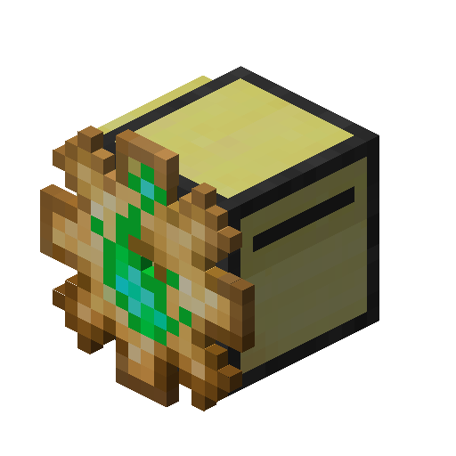

Husbandry automata¶
Picture

Advanced automata that can harness power of the nature. This automata provider extra capabilities of take care about peaceful mobs and crops (nether wart and cocoa beans included!).
Obtaining¶
Feed 1 pig, 1 chiken, 1 sheep and 1 cow souls to automata core with soul scrapper to obtain it.
Supported APIs¶
- Configuration API
- Fuel API
- Operation API
- Look API
- Interaction API: allows interaction with blocks and some entities
- Scan API: allows interaction with items and some entities
- Capture API: only interaction with some entities
Extra methods¶
| Function | Returns | Description |
|---|---|---|
| harvest(direction?: Direction) | Result | Tries to harvest crop. Crop will not be broken, works like right click harvest |
Notes¶
Which entity are usable for husbandry automata
If at least one of criteria met:
- Entity is friendly
- Entity have "creature" category
- Entity have
turtlematic:husbandry_extra_animaltag
What is count as crops
If at least one of criteria met:
- Block are extends CropBlock
- Block has age attribute and
turtlematic:husbandry_extra_crops
Extra information about animals
Sometimes1 this automata will show extra information about animals when you use Look or Scan APIs. For example, this is output for sheep
{
"type": "Sheep",
"name": "Sheep",
"category": "CREATURE",
"id": 1269,
"tags": {},
"uuid": "0737fd25-a1b6-4a1a-9cdd-3081e0155bb6",
//here goes extra fields
"aggresive": false,
"baby": false,
"inLove": false,
"aggresive": false,
"shearable": true
}
Extra information about blocks
If block has age property, extra data about it will be provided when you use Look API.
{
"age": 2,
"maxAge": 2,
"name": "Cocoa",
"tags": [
"minecraft:mineable/axe",
"turtlematic:husbandry_extra_crops"
]
}
For beehive and bee nest there a lot of extra data will be provided when you use Look API.
{
"honetLevel": 3,
"name": "Bee Nest",
"isFull": false,
"isSmoked": false,
"bees": [
"hasFlower": true,
"hasNectar": true,
"hasStung": false,
"health": 10,
"id": "minecraft:bee",
"name": "Bee",
"minOccupationTicks": 2400,
"ticksInHive": 283
]
"tags": [
"minecraft:mineable/axe",
"minecraft:beehives"
]
}
-
When entity class extends Animal.
shearableavailable when entity class extends Animal and implements Shearable interface ↩